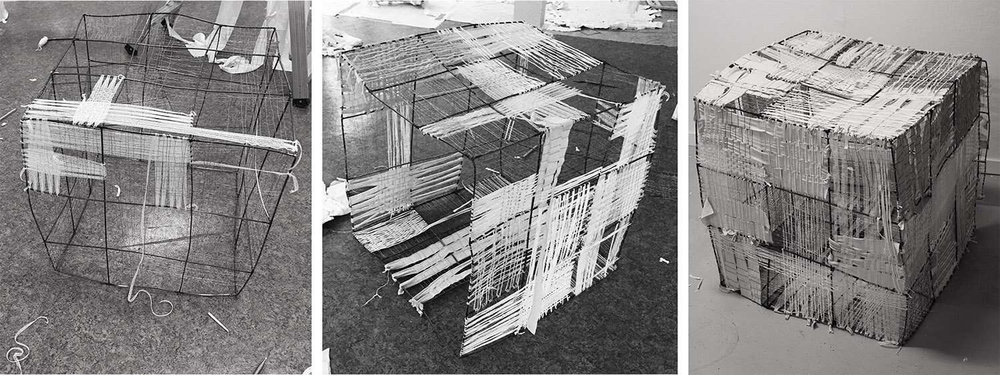
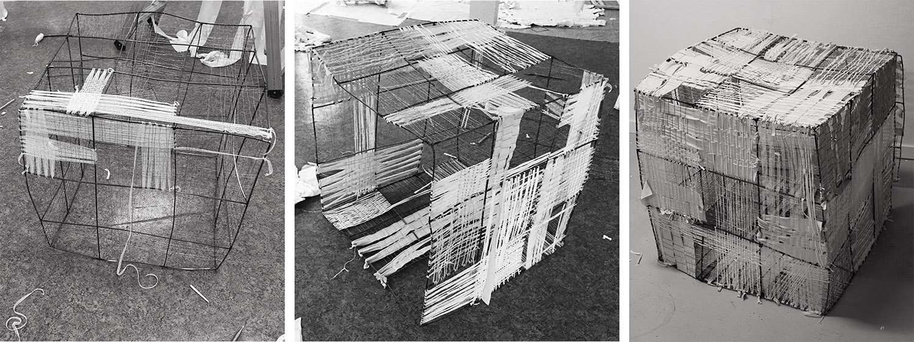

Tekstilni objekti in performativna umetnost
Avtorica: Urška Medved / Mentorica: izr. prof. mag. Katja Burger Kovič / Foto: Helena Pernow, Filip Štepec, Branko Gosarič / 2021
Textile Objects and Performative Art / Author: Urška Medved / Mentor: Assoc. Prof. Katja Burger Kovič / Photo: Helena Pernow, Filip Štepec, Branko Gosarič / 2021
 

Delo Tekstilni objekti in performativna umetnost Urške Medved raziskuje aspekte uporabe tekstila v različnih oblikah performativne umetnosti, prisotnost tekstila v sodobni plesni umetnosti, kjer se pojavlja kot kostum in scenski element, in pojavnost tekstila v v performansu in happeningu – dveh oblikah, ki zavračata klasično gledališko umestitev. V delu raziskuje tudi performerjev odnos do tekstila in vlogo v njegovi umetniški manifestaciji ter v njem na tri različne načine/podprojekte prikaže stičišče tekstila in giba.
Urška Medved, in the work Textile Objects and Performative Art, explores different aspects of the use of textiles in different kinds of performative arts and the use of textiles as a costume or an element of scene in contemporary dance. She also explores the use of textiles in other performative art forms, such as happening and performance, that both try to put aside classical stage form; she explores the relation between performer and textile as an object of his art manifestation. She introduces three different options/subprojects for connecting body movement and textiles.
V prvem s tehniko tkanja in uporabo tekstilnih prej, žice in mavca ustvari tekstilni objekt, ki ga s telesnim stikom tekom kratkega performansa preoblikuje in preoblikovano obliko umesti v razstavo. V drugem podprojektu se usmeri v konceptualni vidik uporabljenega tekstilnega objekta, ki tekom raziskovanja degradira do te mere, da iz njega tekstil izgine in nam služi le kot orodje asociacije, ki vodi gibanje v plesno-performativni predstavi.
In the first, a textile object is made using a weaving technique and different kinds of threads, wires, with the addition of plaster. With the body’s weight and use of different kinds of moves, she transforms the primary shape of the textile object and the resulting shape is later placed in a gallery space. In the second subproject, the stress is on the conceptual use of a textile object.
Tretji podprojekt se osredotoča na fizične ostanke v obliki foto-, video- in avdiozapisa ter jih prek računalniške manipulacije transformira. Z uporabo digitalnega tiska rezultat preslika na bombažno keper tkanino in žamet, kot rezultat pa nastanejo velike tekstilne slike.
The third subproject focuses on the video, photo and audio remains of the previous two projects. Computer manipulation transforms them and presents them in a new way, as digitally printed pictures on velvet and jeans, as a video and light installation.
Stik telesa performerja in tekstila je indirekten; obiskovalec razstave s svojo prisotnostjo v prostoru postane performer. Kljub ločevanju eksperimentalnega dela na tri podprojekte so le-ti zgrajeni v logično sosledje – se nadaljujejo in nadgrajujejo.
The contact between the performer’s body and the textile is indirect; the visitor of the exhibition becomes a performer. Even though the experimental part is divided into three different subprojects, they are built sequentially and represent a continuation and upgrading of the same project.